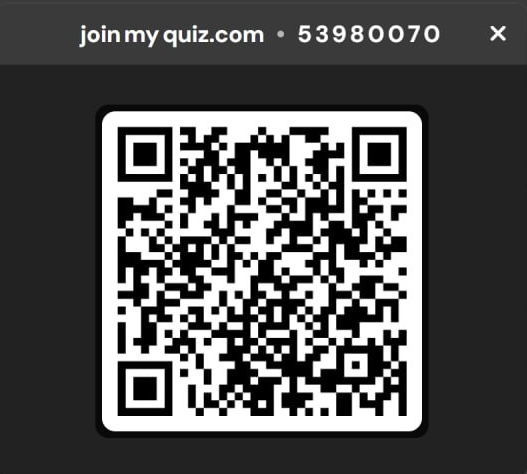

Kuiz Interaktif
Berikut adalah contoh code soalan kuiz:
Boleh klik link di bawah untuk sertai kuiz interaktif:
Sertai Kuiz WaygroundJawab semua soalan yang disediakan di kuiz tersebut.
Selepas selesai, ambil screenshot sebagai bukti bahawa anda telah menjawab.
Hantar screenshot ke group kelas.
Nota: Kuiz ini boleh dijawab tanpa had masa. Screenshot membantu guru mengesahkan penyertaan anda.